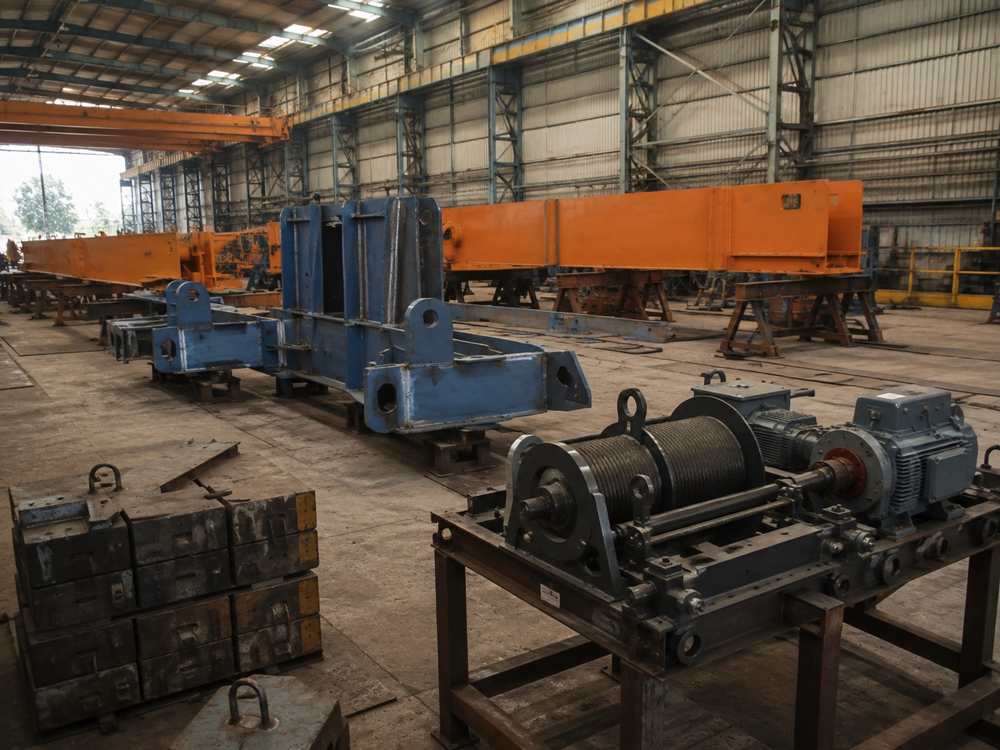
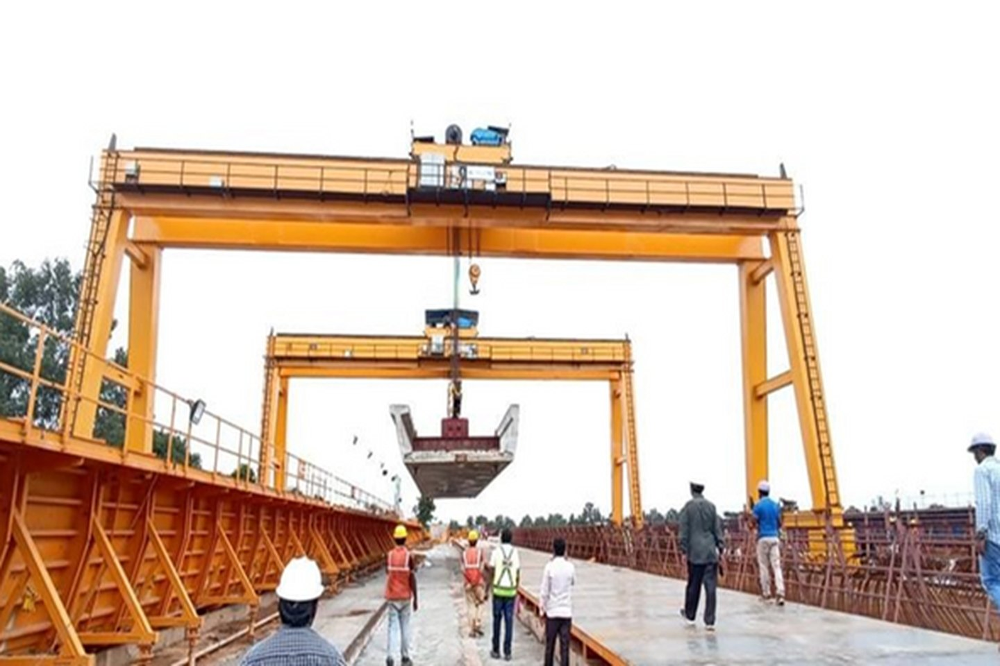
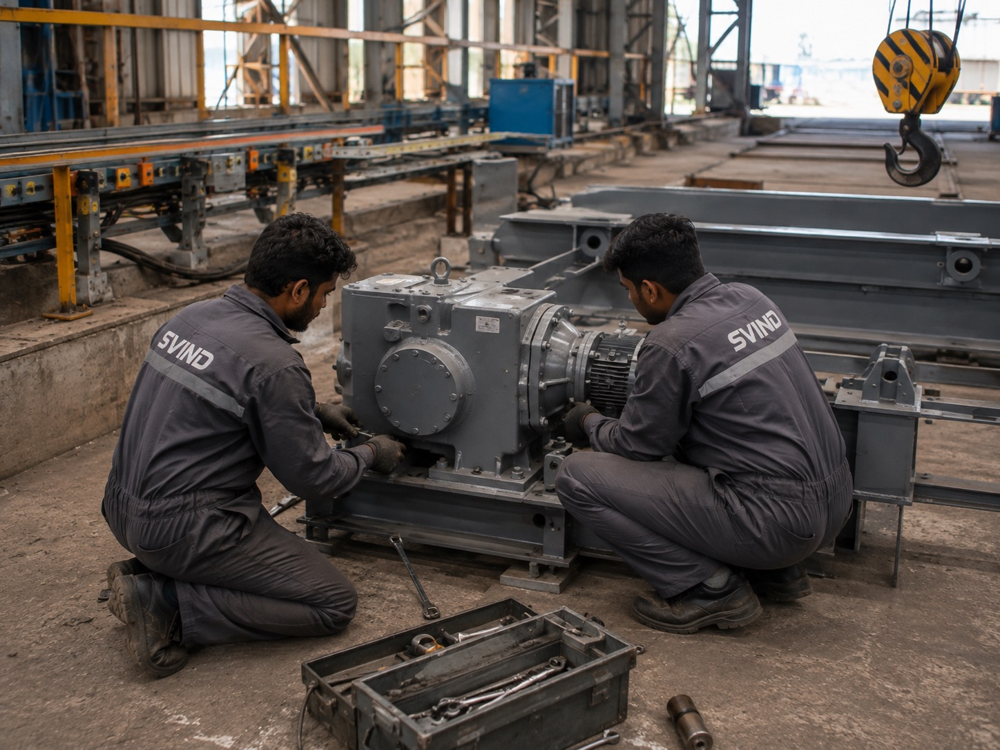

Harohalli KIADB
0114

EOT crane manufacturers in Bangalore
Manufacturer · Harohalli KIADB · Since 2006. Our own works sits inside the Bengaluru industrial region, at Harohalli KIADB in Kanakapura Taluk. Girders are fabricated, machined, wired and load-tested there, then trailered to your bay. Design, factory acceptance test, erection, commissioning and AMC are all handled by the same company - not by an agent quoting on someone else's crane.
- Capacity
- 1 - 100 T
- Standards
- IS 807 · IS 3177 · IS 4137
- Works
- Harohalli KIADB
- Established
- 2006
Verified
0214
Verification and credentials
- Manufacturing since
- 2006
- GST (Karnataka)
- 29AAKCS6443A1ZB
- Quality system
- ISO 9001 (PDF)
- Registration
- MSME
- CIN
- U29100KA2006PTC040123
- Works
- Harohalli KIADB
Name · address · phone
0314
The works you would be buying from
S.V. Material Handling System Pvt LtdHarohalli KIADB Industrial Area
Kanakapura Taluk, Ramanagara District
Bengaluru, Karnataka 562112, India
Phone +91 80 2345 6789
WhatsApp +91 80 2345 6789
GST 29AAKCS6443A1ZB
Mon - Sat, 09:30 - 18:30 IST
Bengaluru operating detail
- Legal entity
- S.V. MATERIAL HANDLING SYSTEM PVT LTD
- Established
- 2006
- Managing director
- Shri D. Umapathi
- Works location
- HAROHALLI KIADB, KANAKAPURA TALUK
- District
- RAMANAGARA, KARNATAKA
- GSTIN
- 29AAKCS6443A1ZB
- CIN
- U29100KA2006PTC040123
- Working hours
- MON - SAT · 09:30 - 18:30 IST
- Languages at site
- KANNADA · ENGLISH · HINDI · TAMIL · TELUGU
The address, phone and hours above are the single canonical NAP string used in the footer, on the Google Business Profile and in the LocalBusiness schema of this page. Fields marked U29100KA2006PTC040123 are withheld from the live page until SVIND supplies them.
Service radius
0414
Where a Harohalli-based crane builder actually reaches
Harohalli sits on the Kanakapura Road corridor, south-west of the city, which puts the southern and western industrial belts inside a same-day engineer movement and the northern belts inside a next-working-day one. That geography is the whole argument for buying local: the people who designed your crane can stand under it.
| Industrial area / belt | What plants there typically run | Covered for |
|---|---|---|
| Harohalli KIADB | General engineering, pharma packaging, plastics, fabrication sheds - our own neighbours | SURVEY · SUPPLY · ERECTION · AMC · SPARES |
| Bommasandra (incl. Jigani link road) | Auto components, precision machining, foundries, heat treatment | SURVEY · SUPPLY · ERECTION · AMC · SPARES |
| Jigani | Casting, forging, sheet metal, electricals | SURVEY · SUPPLY · ERECTION · AMC · SPARES |
| Hosur Road belt (Electronic City → Attibele → Hosur) | Tier-1 and tier-2 automotive, machine tools, assembly lines | SURVEY · SUPPLY · ERECTION · AMC · SPARES |
| Peenya (1st, 2nd, 3rd Stage) | Job-shop machining, structural fabrication, older sheds needing retrofit | SURVEY · SUPPLY · ERECTION · AMC · SPARES |
| Nelamangala | Warehousing, structural steel, building products | SURVEY · SUPPLY · ERECTION · AMC |
| Dabaspet | Heavy fabrication, cement and building materials, engineering units | SURVEY · SUPPLY · ERECTION · AMC |
| Rest of Ramanagara, Kanakapura, Channapatna | Silk and agro processing, granite, general fabrication | SURVEY · SUPPLY · ERECTION · AMC |
Coverage rows describe the scope SVIND performs directly with its own engineers rather than through a subcontractor. Sites outside Karnataka are quoted separately with travel and stay shown as a distinct line in the offer.
Response · survey
0514
The response window we commit to
Two numbers matter to a plant that already owns a crane: how fast an engineer reaches the bay when the crane stops, and how fast a site survey happens when you are still deciding. Both are written into the AMC contract rather than left to goodwill.
- Breakdown attendance · AMC sites in Bengaluru
- WITHIN TBC WORKING HOURS
- Pre-sales site survey · Bengaluru
- WITHIN TBC WORKING DAYS
- Quotation after survey
- WITHIN TBC WORKING DAYS
U29100KA2006PTC040123 - the three windows above are a commitment SVIND must be able to keep at every site listed in the table, in writing. They are published as placeholders and must be replaced with SVIND-approved figures before this page goes live. Per the conversion spec, the response number comes from the client, not from us.
What a site survey covers
- Step 01
- BAY MEASUREMENT
- Step 02
- GANTRY CHECK
- Step 03
- DUTY STUDY
- Step 04
- POWER SUPPLY
- Step 05
- OFFER
Span at rail centres, lift height under the lowest obstruction, runway length, existing girder and rail section, hook approach needed at both ends, incoming supply and DSL routing, and the real duty cycle from the shift pattern. That is the data IS 3177 asks for, and it is why a measured quotation and a phone quotation are not the same document.
Sequence
0614
Survey, build, commission
-
01
Survey the bay
An engineer measures span at rail centres, lift height, runway length, existing gantry section and the real duty cycle before we quote.
-
02
Build at Harohalli
Girder fabrication, machining, assembly, wiring and no-load testing happen at our own works. No third-party fabrication shop in between.
-
03
Commission and maintain
FAT you can witness in a working day, then erection, commissioning, load testing and AMC by the same company.
AMC & preventive maintenance
Proof
0714
What backs a Bengaluru quote
-
2006 Manufacturing since
S.V. Material Handling System Pvt Ltd has built cranes at Harohalli KIADB since 2006.
-
100 Tonne capacity
Capacity range 1 - 100 T, with double-girder cranes from 5 T upwards.
-
807 IS design code
Designed to IS 807, IS 3177 and IS 4137, with load test certificates issued in English.

Components made at the works
Crab units, rope drums, forged hooks and gearboxes are manufactured to order. Pendant cable, DSL sections, collectors, brake liners, wheels and sheaves are held at Harohalli, so a spare matches the crane you already own.
Local proof
0814
Cranes we have installed in and around Bengaluru
Publication blocker · not published.
This page cannot go live until SVIND supplies at least one genuine Bengaluru-area installation. For each reference we need: industrial area (for example Peenya, Bommasandra, Jigani), industry, crane type, capacity in tonnes, span in metres, duty class, year of commissioning, and whether the client name may be published or must stay anonymous. Anonymous is fine - “40 T double-girder EOT, M7 duty, 22 m span, automotive plant, Bommasandra, 2023” converts. An invented reference on a safety-critical product is a liability, not a shortcut, so this block ships empty rather than filled.
- Reference must carry
- AREA NAME · INDUSTRY TAG
- Reference must carry
- CAPACITY · SPAN · LIFT HEIGHT
- Reference must carry
- DUTY CLASS · IS 3177 / FEM 9.511
- Reference must carry
- YEAR COMMISSIONED
- Reference must carry
- PHOTO RIGHTS · NAME-USE PERMISSION
Built at Harohalli
0914
What we manufacture for Bengaluru plants
Every crane below is fabricated at the Harohalli works and supplied on our own erection team, anywhere in the coverage list above.
-
 Single girder EOT crane
The default for a Peenya or Jigani job shop: lighter wheel loads, so an existing gantry often takes it without strengthening.
Single girder EOT cranes
Single girder EOT crane
The default for a Peenya or Jigani job shop: lighter wheel loads, so an existing gantry often takes it without strengthening.
Single girder EOT cranes
-
 Double girder EOT crane
Wide bays, higher duty and full hook height. Standard on Hosur Road automotive and heavy fabrication sheds.
Double girder EOT cranes
Double girder EOT crane
Wide bays, higher duty and full hook height. Standard on Hosur Road automotive and heavy fabrication sheds.
Double girder EOT cranes
-

Hot metal / ladle crane For Bommasandra and Jigani foundries: M8 duty, IS 4137 clauses, thermal shielding and redundant braking on the hoist. Hot metal and ladle cranes
-

Gantry & goliath crane Yard handling where there is no building to hang a crane from - stockyards at Dabaspet and Nelamangala. Gantry and goliath cranes -
 Jib & monorail crane
Machine-side lifting inside a bay already served by an overhead crane. Pillar, wall-mounted and 360° slewing.
Jib and monorail cranes
Jib & monorail crane
Machine-side lifting inside a bay already served by an overhead crane. Pillar, wall-mounted and 360° slewing.
Jib and monorail cranes
-

Crane spares & components Crab units, DSL shrouded busbar, forged hooks, wheels, rope drums, sheaves, gearboxes and pendant cables. Crane spare parts
AMC · spares · stocking policy
1014
After the crane is commissioned
The maintenance engineer, not the buyer, decides whether a crane brand gets bought twice. So the spares position is stated plainly rather than left to a phone call.

- Held at Harohalli works
- PENDANT CABLE · DSL SECTIONS · COLLECTORS · BRAKE LINERS · WHEELS · SHEAVES
- Manufactured to order
- CRAB UNITS · ROPE DRUMS · FORGED HOOKS · GEARBOXES
- Stock item dispatch
- U29100KA2006PTC040123
- Made-to-order lead time
- U29100KA2006PTC040123
- AMC visit frequency
- U29100KA2006PTC040123 PER YEAR
- Load testing
- CALIBRATED WEIGHTS · TEST REPORT ISSUED
- Other makes serviced
- YES · ANY MAKE OF EOT OR GANTRY CRANE
We service cranes we did not build, and we publish an open spares list. Nothing about the design forces you back to us - standard bought-out components are used wherever the duty allows.
Local versus out-of-state
1114
Four things a Bengaluru buyer gets that a shipped-in crane cannot give
Chennai, Pune and Ahmedabad builders quote into Karnataka every day. Their steel is not worse. What changes is everything that happens around the steel - and that is where a crane project actually goes wrong.
A crane that stops in the middle of a shift is not a warranty question, it is a production question. When the manufacturer is 300 km away, the first response is a phone diagnosis and a courier. From Harohalli, the same conversation ends with a person under the crane. That difference compounds across a fifteen-year service life far more than a few percent on the purchase price.
Most disputes on retrofit projects come from three numbers taken over the phone: span at rail centres, available lift height, and the section of the existing gantry. Sheds in Peenya and older parts of Bommasandra are rarely square, and rails are rarely where the drawing says. We measure before quoting, which is cheap for us and expensive for a builder flying a person in.
A double-girder crane travels as long, heavy, over-dimension freight. Out-of-state supply adds that haul plus the erection crew's travel and stay, and those costs usually sit inside the lump sum where you cannot see them. Ask every bidder to show freight, erection travel and stay as separate lines. From Harohalli the movement is intra-region, and you can attend the factory acceptance test on your way to work.
Operator training and maintenance handover happen in Kannada, Hindi, Tamil, Telugu or English - whichever the crew actually speaks. A safety briefing delivered in a language half the bay does not follow is a paper exercise. Documentation stays in English because that is what your inspector, your insurer and your auditor read.
Getting to the works
1214
Visit the factory before you sign
Harohalli KIADB Industrial Area is on the Kanakapura Road side of the city, in Kanakapura Taluk of Ramanagara District. Buyers coming from the Hosur Road and Bommasandra side generally route via NICE Road; buyers from Peenya and the north come down the Outer Ring Road and onto Kanakapura Road.
Turn-by-turn directions, the plot number and the gate contact are published with the verified Google Business Profile listing.
Bring your bay drawing. If you do not have one, we will measure it.
Bengaluru questions
1314
What local buyers ask before they shortlist us
Yes. Peenya 1st, 2nd and 3rd Stage are inside our regular site-visit route from Harohalli. An engineer measures the bay span at the rail centres, the available lift height under the roof truss, the runway length and the existing gantry section before we quote, because a Peenya shed retrofit is usually constrained by the building rather than by the crane.
Bommasandra is served directly from the Harohalli works, so a service engineer travels with common wear items rather than waiting on a courier. The committed attendance window for AMC customers is written into the contract; the site-wide figure is the one published in the response-window block above. U29100KA2006PTC040123
The factory is at Harohalli KIADB Industrial Area, Kanakapura Taluk, Ramanagara District - inside the Bengaluru industrial region. Girder fabrication, machining, assembly, wiring and no-load testing happen there. There is no third-party fabrication shop between you and us, which is worth checking with every bidder who lists a Bengaluru address.
Yes, and a Bengaluru buyer can do it in a single working day: deflection check at rated load, brake test, limit-switch and travel checks, and a walk through the test certificate with the engineer who built the crane. Buyers importing a crane cannot do this at all, and buyers purchasing out of state rarely bother.
Yes, for the components we manufacture and the standard wear items we hold: pendant cables, DSL shrouded busbar sections and collectors, wheels, brake liners, sheaves, rope drums, forged hooks and gearbox spares. Items made to order carry a published lead time. We also supply spares for cranes built by other manufacturers.
Yes. Operator and maintenance handover at site is done in Kannada, Hindi, Tamil, Telugu or English, whichever the shop floor actually uses. Written documents - load test certificates, IS 807 declarations, wiring diagrams and the O&M manual - are supplied in English.
Transport to a Bengaluru site is a short intra-region trailer movement from Harohalli, not an interstate haul. A crane bought from Chennai, Pune or Ahmedabad carries several hundred kilometres of over-dimension freight plus the erection team's travel and stay in its landed cost. Ask for both figures line-by-line when you compare quotations.
We carry out load testing with calibrated weights and issue the test report your safety officer files. Certification by a competent person under the Karnataka Factories Rules is done by the approved third party; we schedule the crane, provide access, and hold the drawings and maintenance history the inspection asks for.
Next step
1414
Send us the bay, not just the tonnage
Capacity alone cannot be priced. Span, lift height, runway length and the real duty cycle change the crane and the number. The quote form asks for them in the IS 3177 order, so filling it in leaves you with a requirement sheet you can send to every other bidder too.
Your city is carried forward as Bengaluru. If you do not want to fill a form, WhatsApp the tonnage and span and an engineer will reply with the questions that matter.
What the quote form asks, in order
- 01 · The load
- CAPACITY · LOAD TYPE · HOT METAL Y/N
- 02 · The building
- SPAN · LIFT HEIGHT · RUNWAY · GANTRY Y/N
- 03 · Duty & controls
- SHIFTS · LIFTS/HR · DUTY CLASS · PENDANT/RADIO/CABIN
- 04 · Contact
- NAME · COMPANY · CITY · PHONE · EMAIL
Typical response within TBC working hours · Mon - Sat